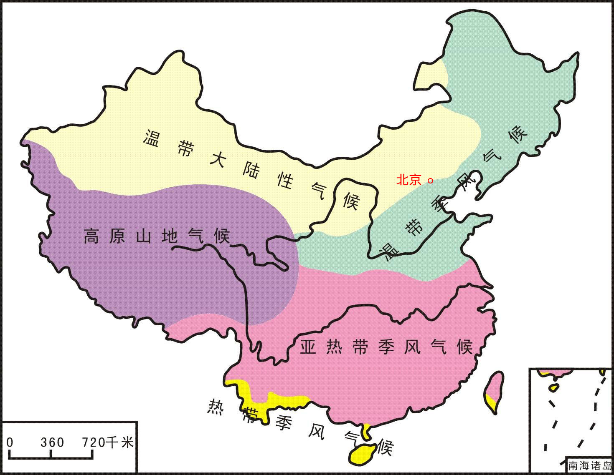

区域环境质量总述
区域环境质量总述
区域环境质量总述
空气质量直接反映空气的污染程度，它是依据空气中污染物浓度的高低来判断的。空气中的污染物主要包括：总悬浮颗粒物：是指漂浮在空气中的固态和液态颗粒物的总称，其粒径范围约为0.1-100 微米。通常把环境空气中空气动力学当量直径在10微米以下的颗粒物称为PM10。
空气质量直接反映空气的污染程度，它是依据空气中污染物浓度的高低来判断的。空气中的污染物主要包括：总悬浮颗粒物：是指漂浮在空气中的固态和液态颗粒物的总称，其粒径范围约为0.1-100 微米。通常把环境空气中空气动力学当量直径在10微米以下的颗粒物称为PM10。
空气质量直接反映空气的污染程度，它是依据空气中污染物浓度的高低来判断的。空气中的污染物主要包括：总悬浮颗粒物：是指漂浮在空气中的
空气质量直接反映空气的污染程度，它是依据空气中污染物浓度的高低来判断的。空气中的污染物主要包括：总悬浮颗粒物：是指漂浮在空气中的固态和液态颗粒物的总称，其粒径范围约为0.1-100 微米。通常把环境空气中空气动力学当量直径在10微米以下的颗粒物称为PM10。
空气质量直接反映空气的污染程度，它是依据空气中污染物浓度的高低来判断的。空气中的污染物主要包括：总悬浮颗粒物：是指漂浮在空气中的固态和液态颗粒物的总称，其粒径范围约为0.1-100 微米。通常把环境空气中空气动力学当量直径在10微米以下的颗粒物称为PM10。
空气质量直接反映空气的污染程度，它是依据空气中污染物浓度的高低来判断的。空气中的污染物主要包括：总悬浮颗粒物：是指漂浮在空气中的
空气质量直接反映空气的污染程度，它是依据空气中污染物浓度的高低来判断的。空气中的污染物主要包括：总悬
| Month | Savings | Savings |
|---|---|---|
| January | $100 | $100 |
| February | $80 | $80 |
点击下载《区域环境质量报告正式版》可了解更多环境质量参数数值、等级划分标准，以及区域环境质量详细评价。
空气质量直接反映空气的污染程度，它是依据空气中污染物浓度的高低来判断的。空气中的污染物主要包括：总悬浮颗粒物：是指漂浮在空气中的固态和液态颗粒物的总称，其粒径范围约为0.1-100 微米。通常把环境空气中空气动力学当量直径在10微米以下的颗粒物称为PM10。微米。通常把环境空气中空气动力学当量直径在10微米以下的颗粒物称为PM10。微米。通常把环境空气中空气动力学当量直径在10微米以下的颗粒物称为PM10。微米。通常把环境空气中空气动力学当量直径在1气动力学当量直径在10微米以下的颗粒物称为PM10。
